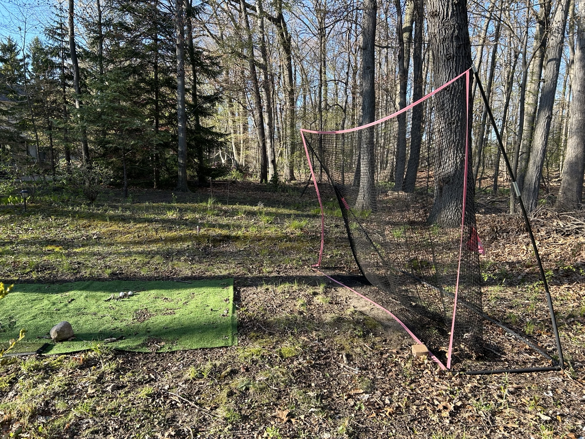

(Written by Claude 3.0 Opus)
오늘도 어김없이 골프 네트 앞에 섰다. 썰렁한 모습이 내 마음을 대변하는 듯했다.  작년부터 골프 연습에 소홀해졌다는 건 부인할 수 없는 사실이다. 그렇다고 골프를 완전히 놓은 건 아니었다. 리그 경기에는 꾸준히 참여하고 있으니까. 다만 연습량이 부족해서 실력 향상은 더딘 편이었다. 제작년을 떠올려 보면 정말 골프에 미쳐 살았던 것 같다. 퇴근하자마자 곧장 연습장으로 직행했고, 주말이면 아침부터 밤까지 그린 위에서 보냈다. 골프공을 제대로 맞추지 못해 네트를 수시로 넘겼던 기억이 난다. 공이 우거진 숲속으로 사라지면 한참을 헤매야 했다. 나무가 많아 사람이 다칠 위험은 없었지만, 공을 찾느라 골머리를 앓았던 것도 사실이다. 그렇게 골프에 푹 빠져 지내던 어느 날, 문득 골프채가 손에 잡히지 않는 나 자신을 발견했다. 일상에 치이고 피로가 누적되면서 자연스레 연습량이 줄어들었던 것이다. 그러다 보니 리그 경기 성적도 좋지 않아 자신감이 떨어졌다. 그래도 그간 골프를 완전히 등한시한 건 아니라서 다행이었다. 최근 골프에 대한 열정이 되살아나는 걸 느끼고 있다. 고무적인 변화다. 긴 겨울잠을 자던 골프채를 꺼내니 묵직한 감촉이 그리웠다. 장비를 잘 관리해 둔 덕분에 녹슬거나 먼지 쌓인 곳은 없었다. 겉보기엔 여전히 골프에 진심인 사람처럼 보였다. 올해는 골프 실력 향상에 더욱 매진할 생각이다. 우선 10야드 정도 비거리를 늘리는 게 첫 번째 목표다. 안정적인 스윙을 위해 기본기부터 탄탄히 잡아야겠다. 하지만 그에 앞서 내가 골프를 즐길 줄 아는 사람인지 돌아볼 필요가 있다. 기술만 좇느라 골프의 참 맛을 잃어버린 건 아닌지 말이다. 아내는 내가 골프에 매진하는 걸 응원해 준다. 건강에도 좋고 스트레스 해소에도 도움이 된다며 나를 독려한다. 가끔은 바쁜 일상에 치여 연습을 게을리 할 때도 있지만, 아내의 배려 덕분에 부담 없이 골프를 즐길 수 있었다. 아내에게 고마운 마음이 든다. 이번 주말에는 오랜만에 연습장에 가기로 했다. 먼저 아내와 일정을 조율하고, 부족한 장비도 점검해 두어야겠다. 마음의 준비도 단단히 해야 할 것 같다. 초심으로 돌아가 골프의 기본기를 익히고, 코스 매너도 되새기면 좋겠다. 무엇보다 즐기는 마음으로 골프에 임해야겠다. 연습장에 가기 전, 골프 네트 근처에서 스윙 연습을 해 보기로 했다. 오랜만에 골프채를 잡으니 손이 어색했다. 예전처럼 힘으로 밀어붙이기보다는 부드럽게 휘두르는 게 포인트였다. 공이 네트를 맞고 옆으로 빗나가는 모습이 낯설었다. 역시 꾸준한 연습이 필요할 것 같았다. 그렇게 한참을 연습하다 보니 문득 골프가 주는 묘미를 되찾은 느낌이었다. 바람을 가르며 날아가는 공을 바라보는 것만으로도 머리가 맑아지는 기분이었다. 내가 왜 골프에 매료되었는지 다시 한번 깨달을 수 있었다. 어쩌면 골프는 삶의 축소판 같은 운동인지도 모른다. 노력한 만큼 결실을 맺을 수 있고, 때로는 예상치 못한 곳으로 나아갈 때도 있으니까. 열심히 연습하다 보니 골프에 대한 자신감도 조금씩 솟아났다. 올해는 10야드 그 이상으로 비거리를 늘릴 수 있을 것 같은 희망찬 느낌이 들었다. 무턱대고 욕심내기보다 차근차근 실력을 쌓아가는 게 중요할 거다. 무엇보다 즐기는 마음을 놓치지 않는 게 관건일 듯싶다. 골프를 즐기며 스트레스를 해소하고 건강도 챙기는 1석 2조의 효과를 누리고 싶다. 바쁜 일상 속에서도 삶의 균형을 잡을 수 있는 좋은 방법이 될 것이다. 앞으로는 골프를 통해 또 다른 활력을 얻으면 좋겠다. 나무들이 초록빛으로 우거진 골프장을 상상하니 벌써부터 설렌다. 자연을 벗 삼아 멋진 샷을 날리는 그 순간을 기다려본다. 친구들과 함께 라운딩을 즐기고 19번 홀에서 여유롭게 맥주 한잔하는 여유도 그립다. 올해는 골프를 통해 좀 더 풍성해진 인생을 만끽하고 싶다. 골프는 분명 나에게 소중한 취미임이 틀림없다. 좋아하는 것에 더 많은 시간을 투자하고 마음을 쏟아야겠다. 때로는 숲속으로 사라지는 공을 찾느라 긴 시간을 허비해야 할지도 모른다. 하지만 그것 역시 골프의 일부이자 재미 아닐까. 인내심을 갖고 느긋하게 즐기다 보면 어느새 골프에 통달해 있는 나를 발견하게 될 것이다. 오늘의 연습을 마치며 골프 네트를 정리했다. 싱그러운 녹음과 공 맞는 짜릿한 손 맛이 그날의 피로를 잊게 해주었다. 골프채를 다시 제자리에 놓으며 조만간 있을 라운딩을 기약했다. 오랜만에 골프 친구들을 만나 회포를 풀 생각을 하니 기분이 절로 좋아졌다. 활기찬 마음으로 골프와 함께할 미래를 그려본다.
Go Back to Brunch Page